| Equipe | Nombre de titre NBA |
|---|---|
| Boston Celtics | 17 |
| Los Angeles Lakers | 17 |
| Golden State Warriors | 7 |
| Chicago Bulls | 6 |
| Philadelphia 76ers | 6 |
| San Antonio Spurs | 5 |
| Miami Heat | 3 |
| Detroit Pistons | 3 |
| Houston Rockets | 3 |
Prédiction de la durée de carrière des joueurs NBA sur la base de leurs caractéristiques et parcours individuels
Introduction
Contexte
La NBA (National Basketball Association) est la ligue professionnelle de basketball la plus compétitive au monde. Depuis plus de 75 ans, elle réunit les meilleurs talents, entraîneurs et infrastructures. Aujourd’hui, la ligue est composée de 30 équipes réparties entre deux conférences (Est et Ouest), disputant chacune 82 matchs de saison régulière. Les huit meilleures équipes de chaque conférence accèdent ensuite aux séries éliminatoires (play-offs), structurées en quatre tours successifs en format au meilleur des sept matchs (Guan, Wang, and Yuan 2022; Teramoto and Cross 2010).
Malgré son prestige, la carrière moyenne d’un joueur en NBA reste relativement courte. Plusieurs études montrent que cette longévité varie selon l’origine des joueurs et leur parcours : par exemple, les joueurs étrangers sans passage par une université américaine semblent avoir une carrière plus brève que ceux issus du système universitaire des USA (Groothuis and Hill 2018).
Du point de vue des données, la NBA génère une volumétrie importante d’informations sur les joueurs : caractéristiques physiques, parcours, statistiques de jeu, durée de carrière, etc. Ces données sont une opportunité pour mener une analyse exploratoire orientée science des données, dans le but d’identifier des patterns significatifs.
L’objectif de cette étude est donc d’utiliser les données disponibles pour prédire la durée de carrière d’un joueur NBA à partir d’attributs personnels (âge, position, parcours académique, etc.) à l’aide de modèles de machine learning.
Mise en contexte du projet
Dans le prolongement de l’introduction, cette section vise à expliciter la méthodologie adoptée pour répondre aux différentes questions posées dans le cadre de ce projet, qu’il s’agisse des questions obligatoires ou de celles laissées au choix de l’équipe.
Nous commencerons par une présentation claire et synthétique de la classe que nous avons développée pour structurer notre l’apprentissage automatique. Cette classe, que nous avons construite manuellement, intègre des fonctionnalités avancées telles que la gestion des variables catégorielles, la détection de la multicolinéarité, la validation croisée, ainsi que la régularisation de type Ridge. Elle se distingue notamment de l’implémentation classique LinearRegression de la bibliothèque scikit-learn, en y ajoutant des méthodes personnalisées adaptées à nos besoins spécifiques.
Ensuite, nous détaillerons les principales étapes du processus de modélisation, en expliquant comment les méthodes de cette classe nous permettent de mettre en œuvre une régression linéaire multiple de manière complète et contrôlée. Nous décrirons le rôle de chaque méthode dans le traitement des données, l’entraînement du modèle, l’évaluation des performances et l’interprétation des résultats, notamment à travers le calcul d’intervalles de confiance et d’indicateurs d’erreur comme le RMSE.
Par ailleurs, une application web interactive a été développée avec Shiny afin de rendre notre travail accessible à travers une interface utilisateur conviviale. Nous présenterons cette application en détail : son objectif, son fonctionnement, et ses principales fonctionnalités. Nous expliquerons également les choix techniques qui ont guidé son développement, ainsi que la manière dont elle permet de visualiser et d’interagir avec les résultats issus de notre modèle de régression.
Enfin, nous proposerons un retour critique sur notre expérience de projet. Cette partie mettra en lumière les défis rencontrés tout au long du processus, les solutions que nous avons mises en œuvre, ainsi que la manière dont nous avons organisé et coordonné notre travail en équipe. Nous partagerons les enseignements tirés de cette collaboration, tant sur le plan technique que méthodologique et humain.
Cadre du projet
Ce projet s’inscrit dans le cadre des travaux de fin d’année des étudiants de première année à l’École Nationale de la Statistique et de l’Analyse de l’Information (ENSAI).
Il constitue le volet informatique appliqué aux données du programme académique.
L’objectif est de mobiliser les compétences acquises en programmation, modélisation et analyse pour résoudre une problématique concrète à partir de données réelles.
➡️ Les slides de la présentation sont disponibles à l’adresse suivante : Accéder aux slides
Aspects techniques du projet
Présentation du jeu de données
L’étude repose sur un ensemble de données relatives au basketball, plus précisément à la ligue américaine : la NBA. Ces données nous ont été fournies sous forme de plusieurs fichiers CSV, que nous avons convertis en tables pour les besoins du traitement. Chaque fichier contient des informations spécifiques sur les matchs, les équipes ou les joueurs de la ligue. Les données sur les confrontations entre équipes couvrent la période allant de 1946 à 2023.
La table common_player_info fournit des caractéristiques de certains joueurs telles que leur nom, prénom, date de naissance, année de draft, statut de “greatest” ou non, durée de carrière, taille, poids, etc. La table draft_combine_history contient quant à elle des informations intéressantes sur la draft des joueurs : université d’origine, équipe de destination, rang de draft, etc. Enfin, la table game recense les matchs de la NBA de la saison 1946-1947 à la saison 2022-2023**. On y trouve notamment des variables essentielles pour filtrer les données et mener nos analyses : saison, date de match, issue de la rencontre (victoire ou défaite), et nombre de points marqués par chaque équipe lors des confrontations. C’est sur ces trois tables principalement que nous réaliserons notre traitement.
Exploration et harmonisation des données
Lors de la phase exploratoire des données, nous avons constaté que les informations de la table game pouvaient évoluer d’une saison à l’autre. En effet, il n’est pas rare qu’une franchise change de nom, notamment lorsqu’elle déménage dans une nouvelle ville. Par exemple, les Seattle SuperSonics sont devenus les Oklahoma City Thunder après leur relocalisation, et les New Jersey Nets ont été renommés Brooklyn Nets après leur installation à Brooklyn.
Afin d’éviter de biaiser nos résultats en considérant à tort que deux noms différents correspondent à deux équipes distinctes, nous avons effectué des recherches sur les 30 franchises de la NBA, accompagnés par l’IA, pour identifier celles ayant changé de nom entre 1946 et 2023.
À l’aide de manipulations de tables avec pandas et de dictionnaires, nous avons harmonisé les noms afin d’attribuer à chaque franchise son nom actuel. Cette étape nous permet ainsi de travailler avec un ensemble cohérent de 30 modalités représentant les franchises existantes.
De plus, dans la table game, les confrontations des playoffs sont absentes pour les saisons suivantes : 1958-1959, 1960-1961, 1964-1965, 1968-1969, 1993-1994, 1995-1996, 1999-2000, 2001-2002 et 2005-2006. Il est donc impossible de déterminer le vainqueur du titre pour ces saisons à partir des seules données disponibles. Nous avons donc recherché et récupéré sur Internet les vainqueurs du titre NBA pour ces années. Ainsi, lorsque l’analyse porte sur le nombre de titres NBA remportés par chaque franchise ou sur l’identification du champion lors d’une saison précise, ces données externes sont intégrées à l’analyse.
Réponses aux questions
L’un des objectifs principaux de ce projet était de mener une première analyse exploratoire des données afin de répondre à un certain nombre d’interrogations. Parmi celles-ci, deux questions nous ont été imposées.
Présentation des questions posées
Les deux questions obligatoires définies dans le cadre du projet sont les suivantes :
Q1. Quelles sont les équipes ayant remporté au moins 3 titres
NBA, en précisant le nombre de titres pour chacune d’elles ?Q2. Quel était le classement des conférences Ouest et Est à la fin de la saison régulière 2022-2023 ?
Les questions ci-dessous sont celles que nous avons jugées les plus intéressantes à explorer et auxquelles nous avons choisi d’apporter des réponses :
Q3. Quelle est la taille et le poids médians des joueurs selon leur poste ?
Q4. Quelles sont les universités ayant formé le plus de joueurs évoluant en
NBA?Q5. En dehors des États-Unis, quels sont les pays d’origine les plus représentés parmi les joueurs
NBA?Q6. Quelle est l’évolution du nombre de rencontres sur périodes données en
NBA?Q7. Qui sont les numéros 1 de la draft lors des 5 dernières saisons ?
Q8. Quelles sont les équipes ayant obtenu le plus de victoires et de défaites durant les 5 dernières saisons régulières ?
Q9. Quels sont les champions
NBAau cours des 8 dernières saisons ?Q10. Quelles sont les équipes ayant remporté le titre
NBAdeux années consécutives ?
Présentation des réponses apportées
Les réponses aux questions sont toutes dans le notebook jupyter (reponses_aux_questions.ipynb). Dans le présent document, nous présentons celles concernant les questions obligatoires, ainsi qu’une question supplémentaire que nous jugeons particulièrement pertinente.
- Les équipes ayant remporté au moins 3 titres NBA
Lorsqu’on observe le nombre de titres remportés par chaque franchise en NBA, on constate une grande variabilité. Par ailleurs, en se concentrant sur les équipes ayant remporté au moins 3 titres, plusieurs franchises emblématiques ressortent, ayant marqué l’histoire du basketball en NBA (cf. tableau d’après). On observe que les Boston Celtics et les Los Angeles Lakers dominent largement le palmarès, avec chacun 17 titres sur la période 1946-2023. Ils sont suivis par les Golden State Warriors, qui en comptent 7.
- Le classement des conférences Ouest et Est à la fin de la saison régulière 2022-2023
Pour déterminer les meilleures équipes de chaque conférence, nous avons analysé leur nombre de victoires durant la saison régulière 2022-2023. Le classement inclut également le total de points marqués par chaque franchise. En cas d’égalité, ce total permet de départager les équipes. Ainsi, les vainqueurs des conférences Est et Ouest sont respectivement les Milwaukee Bucks et les Denver Nuggets (cf. le tableau ci-dessous).
| Equipe conférence Est | Victoires | Points | Equipe conférence Ouest | Victoires | Points |
|---|---|---|---|---|---|
| Milwaukee Bucks | 58 | 9589 | Denver Nuggets | 53 | 9495 |
| Boston Celtics | 57 | 9671 | Memphis Grizzlies | 51 | 9587 |
| Philadelphia 76ers | 54 | 9448 | Sacramento Kings | 48 | 9898 |
| Cleveland Cavaliers | 51 | 9205 | Phoenix Suns | 45 | 9319 |
| New York Knicks | 47 | 9514 | Golden State Warriors | 44 | 9753 |
| Brooklyn Nets | 45 | 9295 | LA Clippers | 44 | 9314 |
| Miami Heat | 44 | 8977 | Los Angeles Lakers | 43 | 9608 |
| Atlanta Hawks | 41 | 9711 | Minnesota Timberwolves | 42 | 9494 |
| Toronto Raptors | 41 | 9254 | New Orleans Pelicans | 42 | 9378 |
| Chicago Bulls | 40 | 9276 | Oklahoma City Thunder | 40 | 9633 |
| Indiana Pacers | 35 | 9535 | Dallas Mavericks | 38 | 9366 |
| Washington Wizards | 35 | 9279 | Utah Jazz | 37 | 9600 |
| Orlando Magic | 34 | 9136 | Portland Trail Blazers | 33 | 9299 |
| Charlotte Hornets | 27 | 9098 | San Antonio Spurs | 22 | 9269 |
| Detroit Pistons | 17 | 9045 | Houston Rockets | 22 | 9081 |
- Les équipes ayant remporté le titre NBA deux années consécutives
Remporter le titre NBA deux années de suite est un exploit rare, compte tenu de la forte compétitivité entre les franchises. Parmi celles qui y sont parvenues, 8 équipes ont réussi à conserver leur titre deux saisons consécutives : Los Angeles Lakers, Syracuse Nationals, Boston Celtics, Detroit Pistons, Chicago Bulls, Houston Rockets, Miami Heat, Golden State Warriors. Il est à noter que les Boston Celtics détiennent un record historique avec 8 titres consécutifs entre les saisons 1958-1959 et 1965-1966.
Présentation des methodes utilisées
Pour répondre aux différentes questions, nous avons créé une classe Reponse dans laquelle chaque question fait l’objet d’une méthode dédiée. Ces méthodes intègrent des paramètres afin de permettre aux utilisateurs d’afficher les résultats tout en pouvant appliquer des filtres personnalisés.
Concernant la première question obligatoire, nous avons défini une méthode prenant en paramètres nb_victoire_min (le nombre minimal de titres à remporter), debut_periode et fin_periode (années délimitant la période d’étude). Ces deux derniers paramètres permettent de filtrer les données sur la période souhaitée. Ensuite, nous récupérons les vainqueurs de chaque saison et comptons les titres remportés par chaque franchise à l’aide de manipulations avec pandas. Enfin, nous ne conservons que celles ayant remporté un nombre de titres supérieur ou égal à celui indiqué.
Pour la deuxième question obligatoire, une autre méthode a été créée avec les paramètres season (saison d’intérêt) et end (date de fin pour limiter les matchs pris en compte). Si le paramètre end est fourni, le classement est calculé à cette date précise ; sinon, le classement à la fin de la saison régulière est affiché. Ces paramètres permettent de filtrer les confrontations selon la saison choisie et, le cas échéant, selon la date limite.
Pour répondre à la dixième question relative aux équipes ayant remporté au moins 2 années consécutives le titre, une méthode prenant les paramètres N, debut_periode et fin_periode a été conçue. Elle permet d’identifier les équipes ayant remporté le titre au moins N années consécutives dans une période définie. Après filtrage des données, les vainqueurs sont extraits, et un traitement via la manipulation de dictionnaires permet de repérer les franchises ayant remporté le titre plusieurs années de suite.
De façon générale, les autres méthodes de la classe Reponse suivent une logique similaire : elles exploitent des paramètres pour affiner les résultats et répondre plus précisément aux besoins de l’utilisateur, contrairement à des méthodes fixes sans personnalisation. Ces traitements sont rendus possibles grâce aux fonctionnalités offertes par le package pandas.
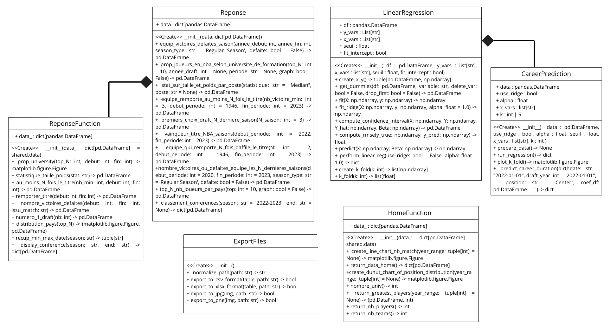
Présentation de la problématique considérée et de la réponse apportée
Comme énoncé et justifié dans l’introduction, notre problématique est la suivante : Prédire la durée de carrière des joueurs en NBA.
Reponse apportée à la problématique
Résultats de l’entraînement et interprétations
Nous avons réentraîné notre modèle sur l’ensemble des données disponibles, sans réserver de jeu de test.
Pourquoi ? Pour exploiter toute l’information disponible et améliorer la précision du modèle final.
Mais comment garantir sa fiabilité ?
Nous nous basons entièrement sur les résultats issus de la validation croisée : la moyenne des erreurs quadratiques moyennes (RMSE) était de 4,59, avec une faible variabilité (écart-type de 0,12).
Cela indique une bonne capacité de généralisation du modèle.
Analyse des effets
Le modèle confirme des tendances observées dans la réalité : - Plus l’âge à la draft est élevé, plus la durée de carrière est courte. - Les joueurs occupant le poste de pivot ou ailier fort ont en moyenne une carrière plus longue, grâce à leur polyvalence.
Sur la figure des resultats de l’entrainement du modèle (graphique a)), nous constatons que les performances de notre classe LinearRegression sont comparables à celles du module linear_model de Scikit-learn.
Exemple de prédiction
Pour un joueur de 18 ans, sélectionné au poste de pivot, le modèle prédit : - Durée de carrière estimée : 7,6 ans - Intervalle de confiance : [4,3 ; 10,9]
Limites
Même si l’intervalle de confiance renforce la crédibilité des résultats, il convient de noter que la RMSE reste élevée (environ 4,6 ans), ce qui signifie que les erreurs de prédiction peuvent être importantes dans certains cas.
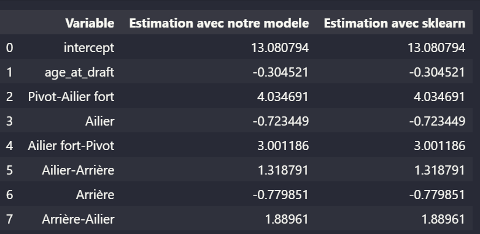
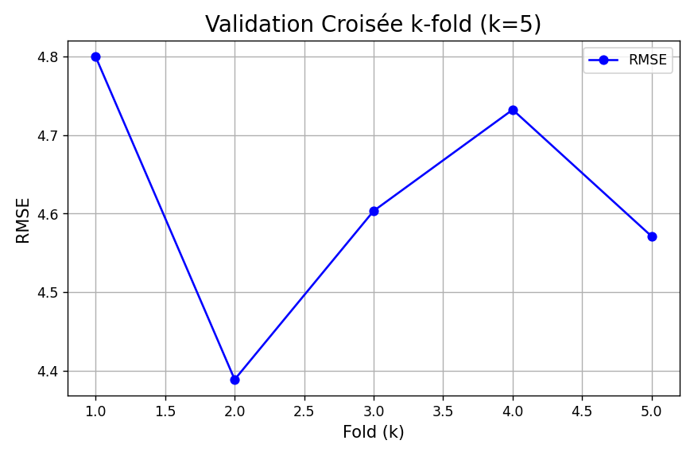
Résultats de l’entrainement du modèle
Lien entre les classe créées et l’application
Dans un souci de modularité, nous avons structuré notre application autour de trois interfaces principales, chacune encapsulée dans une classe distincte.
La première interface est la page d’accueil, qui ne fait pas directement appel aux classes
LinearRegressionouReponse. Elle sert principalement d’introduction à l’application mais est basée sur une classe.La seconde interface, Reponses aux questions, repose sur la classe
Reponse(détaillé en annexe) pour répondre aux requêtes des utilisateurs. Elle permet également d’appliquer des filtres sur les résultats, comme l’affichage des médianes, moyennes selon le choix de l’utilisateur, ou encore un filtrage par date.Enfin, la page Machine Learning présente les résultats d’entraînement du modèle ajusté ainsi que sa validation. Elle offre aussi la possibilité à l’utilisateur de faire des prédictions en renseignant les caractéristiques (features) d’un joueur de la
NBA. Cette page utilise une classeCareerPrediction, laquelle dépend elle-même de la classeLinearRegression.
Architecture du projet
La figure ci-dessous présente l’architecture générale du projet. Chaque dossier a été conçu pour répondre à une préoccupation spécifique. Pour que ces dossiers soient reconnus comme des paquets Python, des fichiers __init__.py y ont été ajoutés avec la définition des modules. Un fichier setup.py permet de gérer les dépendances internes et de faciliter les interactions entre les différents modules.
Enfin, tous les packages nécessaires à l’exécution des codes ainsi que leurs versions sont listés dans le fichier requirements.txt.
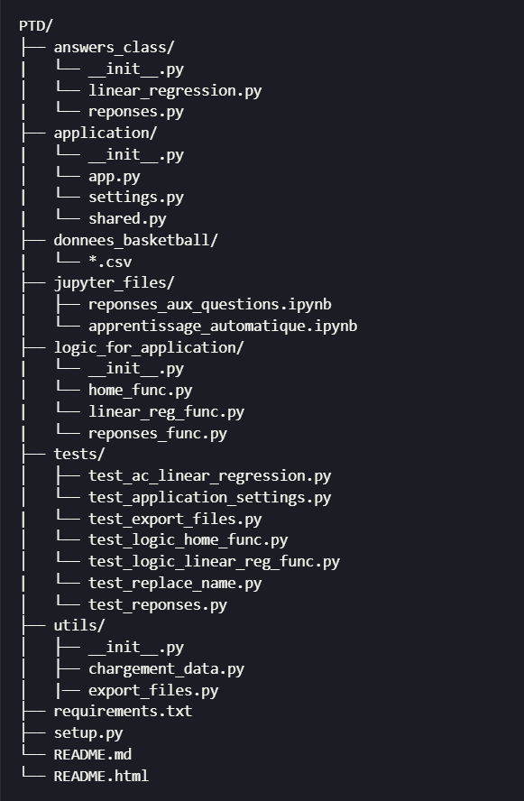
Packages et bibliothèques utilisés
Le projet repose sur plusieurs bibliothèques Python essentielles, parmi lesquelles :
- Pandas : utilisée pour la manipulation de données tabulaires, elle facilite le traitement et la transformation des données structurées.
- Matplotlib : permet de créer des visualisations détaillées et personnalisées sous forme de graphiques.
- NumPy : utile pour les opérations mathématiques et la gestion efficace de tableaux multidimensionnels.
- Scikit-learn : utilisée pour les tâches de machine learning. Elle nous a permis de comparer nos implémentations personnalisées avec les modèles standards de la bibliothèque).
- Shiny : a été utilisée pour développer l’interface utilisateur de l’application.
Ces outils ont été essentiels pour mener à bien les étapes d’analyse, de modélisation et de visualisation du projet.
Couverture des tests
La quasi-totalité des classes et fonctions a été testée, y compris celles liées aux pages de l’application web développée.
Au total, 214 tests ont été réalisés, assurant une couverture de plus de 94% du code.
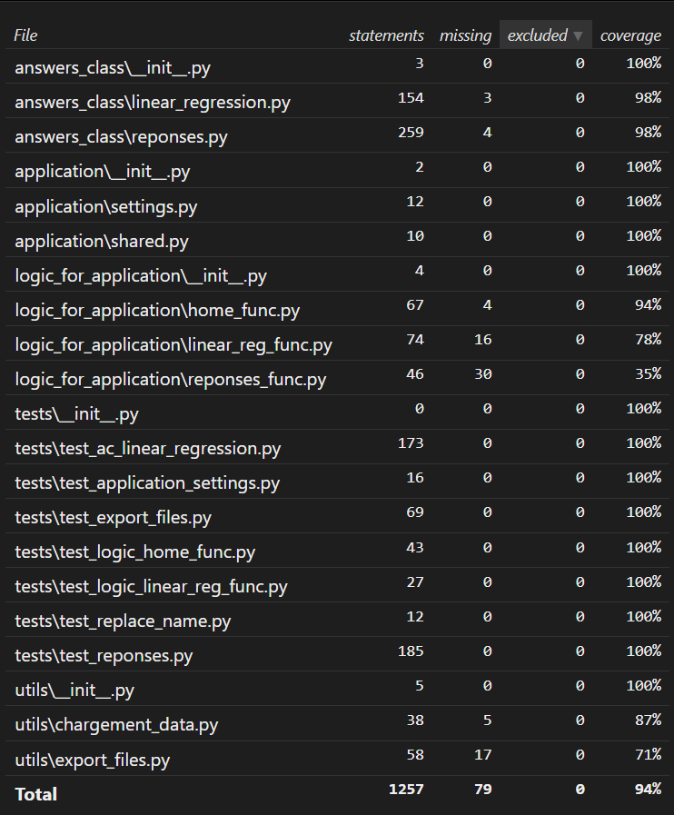
Utilisation de l’application
Page d’Accueil
La page Accueil présente des statistiques générales sur la NBA :
- Nombre total de joueurs,
- Nombre d’équipes,
- Nombre d’universités représentées.
L’utilisateur peut également explorer avec des filtres :
- Le nombre de joueurs Greatest 2,
- L’évolution du nombre de matchs par saison,
- La répartition des positions de joueurs entre deux années définies.
Ces éléments sont illustrés en figure ci-dessous.
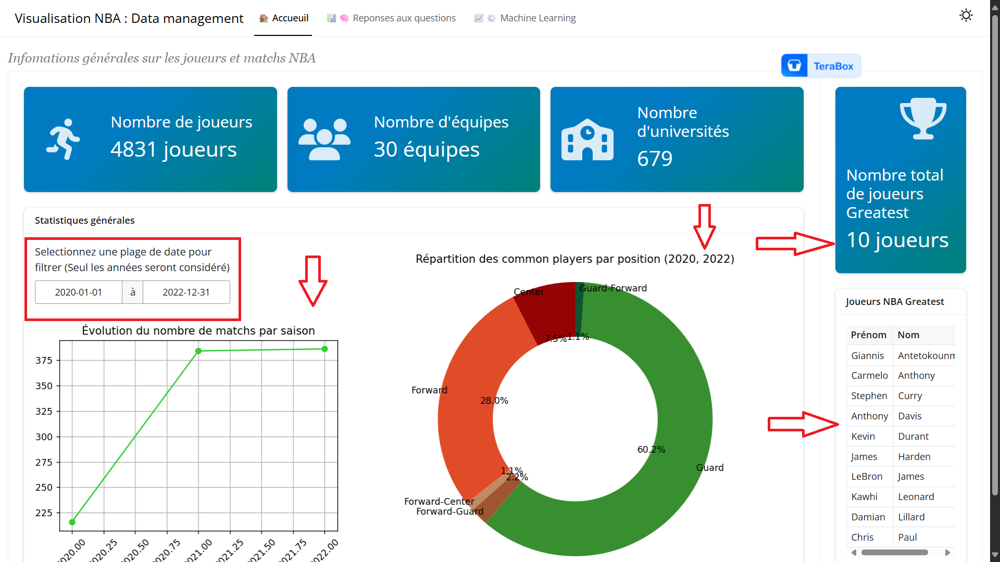
Page de reponses aux questions
Cette page permet à l’utilisateur de :
- Visualiser les résultats des analyses,
- Interagir avec la base via des champs de saisie dynamiques.
Exemple : pour la question “Classer les universités selon le nombre de joueurs formés”, l’utilisateur peut :
- Définir une période,
- Sélectionner le Top N universités.
Les réponses sont regroupées par catégories (Joueurs, Équipes, etc.).
La figure ci-dessous illustre ce qui a été dis en ammont.
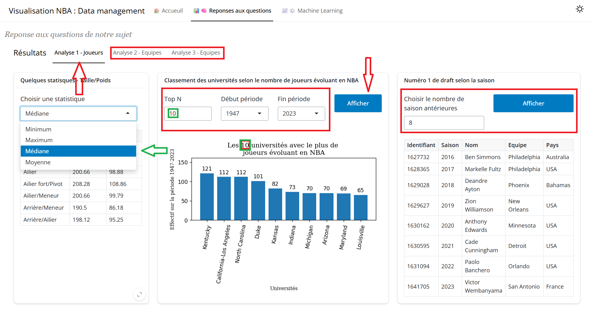
Page des résultats du modèle d’apprentissage supervisé et de prédiction de la durée de carrière : Machine Learning
Sur cette page nous affichons les résultats du modèle à la suite de son entraînement puis la validation du modèle. On voit que l’erreur quadratique moyenne 3 tourne autour de 4,6 en moyenne (le graphique à droite sur la juste en bas). Ensuite pour permettre à l’utilisateur de prédire la durée de carrière d’un joueur lambda, des champs de saisies sont affichés. Il pourra donc entrer la date de naissance du joueur, la date de sa draft et choisir sa position. Même s’il ne connait pas les date exacte, ce n’est pas grave, c’est l’année qui importe. Ensuite en cliquant sur le bouton Predire il obtient la prédiction avec un intervalle de confiance.
L’application a été déployée sur un server posit (version gratuite) et responsive donc s’adapte à différentes tailles d’écran. Pour acceder à l’application cliquez ici.
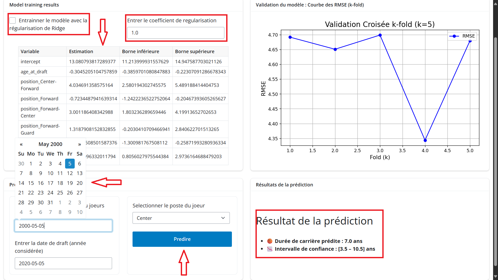
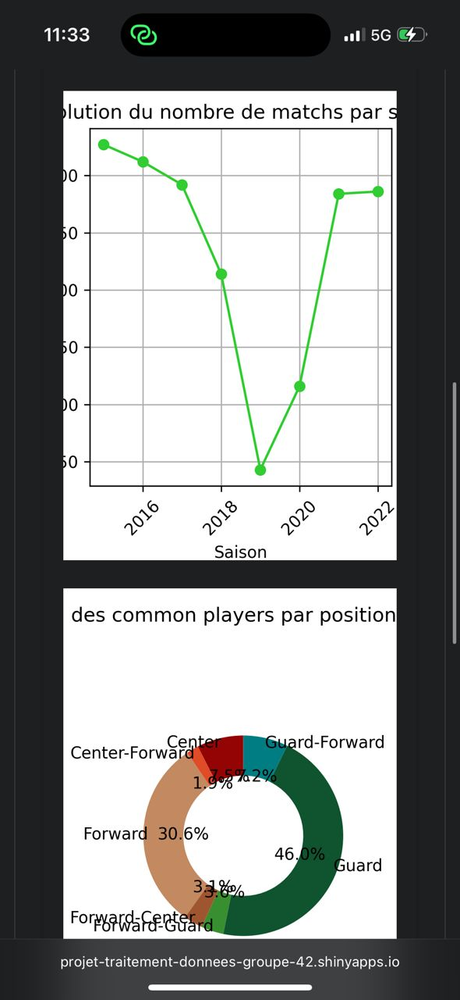
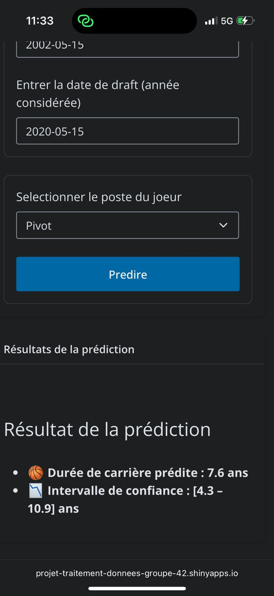
Retour d’expérience
Réponse aux attentes
Au cours du projet, nous avons été confrontés à plusieurs défis. En effet, au départ, les attentes concernant les questions et le rendu n’étaient pas totalement claires. Toutefois, grâce aux explications de notre tutrice Manon EVAIN, les choses se sont rapidement clarifiées. Elle nous a notamment encouragé à structurer notre code en classes, à les tester rigoureusement, et surtout à implémenter nous-mêmes le modèle d’apprentissage automatique.
Ces recommandations, combinées à nos efforts, nous ont poussés à aller au-delà des exigences initiales : nous avons ainsi modularisé l’ensemble du projet, afin d’en faciliter la maintenabilité et la réutilisabilité.
Concernant les réponses aux questions, il a fallu faire preuve de minutie et de rigueur, notamment pour identifier les observations manquantes susceptibles de fausser les résultats par rapport aux données officielles disponibles en ligne. À la fin du projet, nous avons aussi dû gérer un problème de changement des noms d’équipes dans le temps. Pour y remédier rapidement, nous avons développé une fonction spécifique, évitant ainsi des erreurs dans nos analyses.
Enfin, la mise en œuvre manuelle du modèle d’apprentissage automatique a été particulièrement bénéfique. Elle nous a permis non seulement de renforcer nos compétences en statistiques, mais aussi de mieux comprendre leur implémentation informatique.
Travail en équipe
Dès le début, nous avons défini les différentes questions, puis nous les avons réparties équitablement, chacun répondant en moyenne à trois questions. L’utilisation de GitHub a grandement facilité le travail collaboratif, notamment pour surmonter les contraintes de distance géographique.
Par ailleurs, lors de nos séances de travail en autonomie, nous avons veillé à partager nos méthodes respectives, afin que chacun puisse comprendre et valider les approches adoptées par les autres. Cette coopération constante nous a permis de rester alignés tout au long du projet.
Satisfaction du travail final
Nous sommes satisfaits du travail accompli, bien que certains aspects puissent être améliorés. Le projet a demandé un fort investissement, mais a suscité un réel intérêt. Nous avons exploré de nouvelles compétences, notamment en développant une interface graphique. Cela nous a poussés à sortir de notre zone de confort, tout en veillant à la qualité du rendu. En somme, ce fut une belle opportunité d’apprentissage, tant sur le plan technique qu’en équipe.
Conclusion
Ce projet s’inscrit pleinement dans le domaine de l’informatique appliquée au traitement de données. À travers l’analyse des données issues de la NBA, nous avons mis en oeuvre une chaîne complète de traitement : du nettoyage des données à leur exploration statistique, jusqu’à la mise en place d’un modèle de machine learning supervisé.
Nous avons ainsi développé une solution permettant de prédire la durée de carrière des joueurs à partir de variables explicatives pertinentes, en mobilisant des techniques issues de la régression linéaire et en appliquant des méthodes de validation croisée. Ce travail nous a permis de mieux comprendre les enjeux liés à la préparation des données (feature engineering, gestion des valeurs manquantes, encodage des variables catégorielles), étape cruciale en apprentissage automatique. Ces étapes nous ont également permis d’apporter des réponses correctes aux différentes questions posées.
Par ailleurs, le projet a donné lieu à la création d’une application interactive en Python (framework Shiny for Python), offrant une visualisation dynamique des données et des résultats, et illustrant l’intérêt d’outils informatiques modernes pour valoriser les analyses.
Ce projet nous a permis de consolider nos compétences en programmation, en traitement de données et en machine learning, tout en approfondissant notre capacité à travailler en équipe sur un projet structuré, dans une logique proche des pratiques professionnelles en data science.
Liste des sigles et abréviations
CSV: Comma-Separated Values
Format de fichier texte utilisé pour stocker des données tabulaires avec des virgules comme séparateurs.IA: Intelligence Artificielle
Ensemble de techniques visant à simuler l’intelligence humaine par des machines.IMC: Indice de Masse Corporelle
Indicateur utilisé pour évaluer la corpulence d’une personne à partir de son poids et de sa taille.JPG: Joint Photographic Experts Group
Format de fichier image compressé couramment utilisé.NBA: National Basketball Association
Ligue professionnelle de basketball nord-américaine.OLS: Ordinary Least Squares (Moindres Carrés Ordinaires)
Méthode d’estimation en régression linéaire consistant à minimiser la somme des carrés des erreurs.PNG: Portable Network Graphics
Format d’image sans perte de qualité, adapté au web.RMSE: Root Mean Squared Error (Erreur Quadratique Moyenne Racine)
Mesure statistique de l’écart type des résidus de prédiction.USA: États-Unis d’Amérique
Pays dont les franchises de la NBA sont majoritairement issues.
Annexes
Annexe 1 : Algorithme utilisé pour le machine learning Modèle de regression linéaire
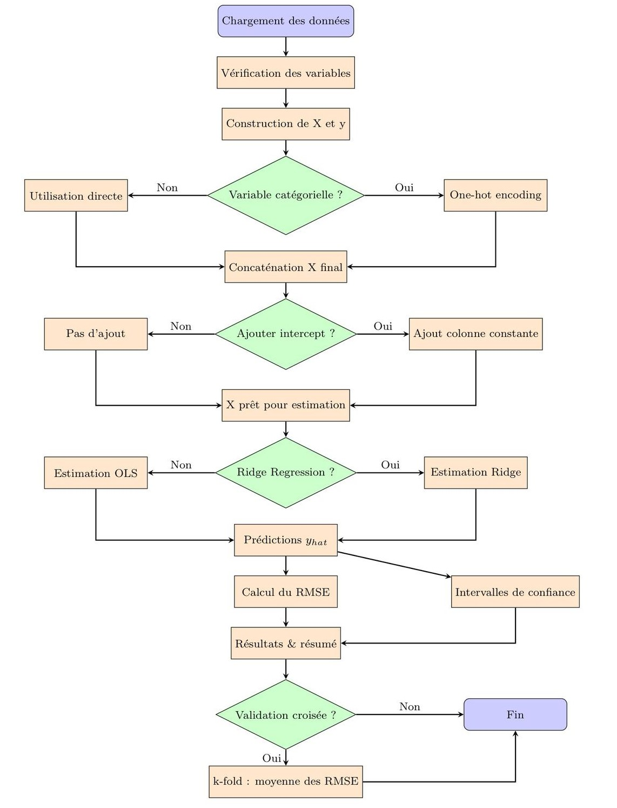
Annexe 2 : Description des classes
Classe Reponse
La méthode init() avant d’initialiser la classe Reponse doit :
- Vérifier que l’argument data est bien un dictionnaire.
- Vérifier que toutes les valeurs sont des objets de type pandas.DataFrame.
La méthode equip_victoires_defaites_saison() retourne une table contenant le nombre de victoires ou de défaites pour chaque équipe entre les saisons données.
La méthode prop_joueurs_en_nba_selon_universite_de_formation() retourne une table contenant le Top N des universités selon le nombre de leurs étudiants ayant évolué en NBA. Si graph = True, la méthode renvoie également un diagramme à barres.
La méthode stat_sur_taille_et_poids_par_poste() retourne une table contenant la statistique demandée sur la taille et le poids des joueurs selon leur poste.
La méthode equipe_remporte_au_moins_N_fois_le_titre() retourne une table listant les équipes ayant remporté au moins le nombre de titres requis.
La méthode premiers_choix_draft_N_derniere_saison() retourne une table contenant les premiers choix de draft sur les N dernières saisons.
La méthode vainqueur_titre_NBA_saisons() retourne une table contenant les vainqueurs du titre NBA sur la période choisie ou sur les saisons d’une période définie.
La méthode equipe_qui_remporte_N_fois_daffile_le_titre() retourne une table listant les équipes ayant remporté au moins N titres consécutifs.
La méthode nombre_victoires_ou_defaites_equipe_les_N_dernieres_saisons() retourne une table listant les équipes ayant obtenu le plus de victoires ou de défaites pour chaque saison d’une période donnée. Elle renvoie le nombre de défaites si defaite = True.
La méthode top_N_nb_joueurs_par_pays() retourne une table indiquant la répartition des joueurs NBA selon leur pays d’origine. Si graph = True, elle retourne également un diagramme à barres.
La méthode classement_conferences() retourne un dictionnaire contenant deux tables, un pour chaque conférence (Est et Ouest). Pour chaque table, on retrouve le classement des équipes selon leur nombre de victoires obtenues en saison régulière.
Classe HomeFunction
La méthode init() initialise la classe avec un dictionnaire de DataFrames contenant les données à visualiser dans l’interface.
La méthode create_line_chart_nb_match() retourne un graphique représentant l’évolution du nombre de matchs joués par saison, sur une période donnée.
La méthode return_data_home() retourne les données principales affichées sur la page d’accueil dans l’interface.
La méthode create_dunut_chart_of_position_distribution() retourne un graphique en forme de donut chart illustrant la répartition des joueurs selon leur poste, pour une période donnée.
La méthode nombre_univ() retourne un entier représentant le nombre total d’universités ayant formé des joueurs NBA présent dans la base de données.
La méthode return_greatest_players() retourne une table des joueurs les plus marquants (statut de greatest) sur une période donnée, ainsi que le nombre de joueurs inclus.
La méthode return_nb_players() retourne un entier représentant le nombre total de joueurs dans la base.
La méthode return_nb_teams() retourne un entier représentant le nombre total d’équipes présentes dans les données.
Classe ReponseFunction
La méthode init() initialise la classe avec un dictionnaire de DataFrames contenant les données nécessaires à l’affichage.
La méthode prop_university() retourne un diagramme représentant les universités ayant formé le plus de joueurs NBA, selon une période et un top N définis.
La méthode statistique_taille_poids() retourne une table contenant une statistique (moyenne, médiane, etc.) sur la taille ou le poids des joueurs NBA, utilisée pour une représentation tabulaire dans l’interface.
La méthode au_moins_N_fois_le_titre() retourne une table listant les équipes ayant remporté au moins un certain nombre de titres NBA sur une période donnée. Les données sont destinées à un affichage dans l’interface.
La méthode remporter_titre() retourne une table avec les équipes ayant remporté le titre NBA au cours de la période spécifiée. Affichage sous de tableau dans l’interface.
La méthode nombre_victoires_defaites() retourne une table indiquant l’équipe avec le plus de nombre de victoires ou de défaites sur la saison régulière, pour une période donnée.
La méthode numero_1_draft() retourne une table listant les joueurs sélectionnés en premier lors de la draft pour les nb dernières années. Idéal pour un tableau historique.
La méthode distribution_pays() retourne à la fois une table et un diagramme illustrant la répartition des joueurs NBA par pays d’origine, selon un Top N défini.
La méthode recup_min_max_date() retourne deux chaînes de caractères représentant la date de début et de fin d’une saison. Elle est utilisée pour ajuster dynamiquement les filtres temporels dans l’interface.
La méthode display_conference() retourne le classement des équipes dans les conférences Est et Ouest pour une saison donnée.
Classe LinearRegression
La méthode init() : vérifie types, colonnes, seuil et intercept ; nettoie df ; crée X et y
La méthode create_x_y(): dichotomise les variables catégorielles ; ajoute un intercept si demandé
La méthode get_dummies() : transforme une variable catégorielle en colonnes indicatrices
La méthode fit() : estimation OLS par pseudoinverse ; avertit si multicolinéarité
La méthode fit_ridge() : estimation Ridge avec paramètre alpha ; intercept non pénalisé
La méthode compute_confidence_interval() : calcule les intervalles de confiance des coefficients
La méthode compute_rmse() : calcule la racine de l’erreur quadratique moyenne
La méthode predict() : génère les prédictions via X %*% Beta
La méthode perfom_linear_reg() : pipeline complet (fit, predict, IC, RMSE) en OLS ou Ridge
La méthode create_k_fold(I) : génère aléatoirement k sous-échantillons pour validation croisée
La méthode k_fold() : exécute la validation croisée k-fold et renvoie les ***RMSE}
Classe CareerPrediction
La méthode init(data, use_ridge=FALSE, x_vars=list(), alpha=1.0, k=5) vérifie que data est un data.frame, initialise les attributs (use_ridge, alpha, k, etc.), clone les données et appelle prepare_data().
La méthode prepare_data() convertit draft_year et extrait birth_year de birthdate, remplace “undrafted” par 0, filtre les joueurs dont la carrière s’achève \(\leq\) 2022 et garde ceux dont age_at_draft > 0. Elle définit x_vars = c(“age_at_draft”, “position”) et instancie un modèle LinearRegression.
La méthode run_regression() reconstruit le modèle LinearRegression avec y_var = “season_exp” et x_vars = c(“age_at_draft”,“position”). Elle Lance perfom_linear_reg(use_ridge, alpha), renvoie les résultats (coefficients, IC, RMSE).
La méthode plot_k_fold() exécute k_fold(k) pour obtenir les RMSE} par fold, puis crée un graphique matplotlib*** et retourne l’objet figure.
La méthode predict_career_duration(birthdate, draft_year, position, coef_df) calcule age-at-draft, construit le vecteur de features (dont les dummy variables de position), récupère l’intercept et les coefficients estimés dans coef_df. Elle agrège contributions de chaque variable pour produire duree_predite et son intervalle_confiance.
Classe ExportFiles
La méthode init() initialise l’exporteur (aucun paramètre requis)
La méthode normalize_path(path) normalise un chemin en remplaçant les backslashes par des slashs.
La méthode export_to_csv_format(table, path) vérifie que table est un DataFrame ou Series et que path est une chaîne, normalise le chemin et exporte la table en ***CSV} (sans index)
La méthode export_to_xlsx_format(table, path) effectue les mêmes contrôles de type que pour le CSV, convertit une Series en DataFrame si nécessaire et exporte au format Excel .xlsx
La méthode export_to_jpg(img, path) vérifie que img est une matplotlib.figure.Figure et que path est une chaîne, normalise le chemin et enregistre la figure au format JPG
La méthode export_to_png(img, path) effectue mêmes contrôles que pour JPG normalise le chemin et enregistre la figure au format PNG
Annexes 3 : Lien visuel éventuel entre le poste occupé sur le terrain, la taille et le poids des joueurs
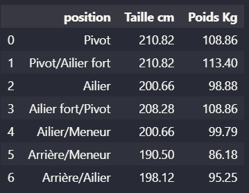
Sur cette figure, on peut voir que les ailiers forts/pivots, pivots et les pivots/ailiers forts sont les plus lourds et les plus grands en médiane. Ce qui traduirait une corrélation intrinsèque entre le poste, la taille et le poids des joueurs.
👥 COLLABORATEURS
- Ousseynou SIMAL : Élève ingénieur à l’École Nationale de la Statistique et de l’Analyse de l’Information (ENSAI)
- Denis THAYANANTHARAJAH : Élève attaché à l’École Nationale de la Statistique et de l’Analyse de l’Information (ENSAI)
- Karima JABRI : Élève attachée à l’École Nationale de la Statistique et de l’Analyse de l’Information (ENSAI)
REFERENCES BIBLIOGRAPHIQUES
Groothuis, Peter A., and James Richard Hill. 2018. “Career Duration in the NBA.” Journal of Sports Economics 19 (6): 873–83. https://doi.org/10.1177/1527002517690789.
Guan, Jianghao, Haoqi Wang, and Jinzhi Yuan. 2022. “Research on the Developing Trend and Strategies of the NBA Games and NBA Players.” Highlights Bus. Econ. Manag 4: 96–102.
Run, Keovathana, Franck Cévaër, and Jean-François Dubé. 2023. “Modèle de régression Linéaire Multiple Pour Prédire La Température Intérieure Sur Les bâtiments éducatifs En Milieu méditerranéen.” In Congrès Français Du génie Civil-CFGC 2023. Academic Journal of Civil Engineering.
Teramoto, Masaru, and Chad L Cross. 2010. “Relative Importance of Performance Factors in Winning NBA Games in Regular Season Versus Playoffs.” Journal of Quantitative Analysis in Sports 6 (3).
Footnotes
La validation croisée est une technique permettant d’évaluer la performance d’un modèle en le testant sur plusieurs sous-ensembles des données. Elle permet de mieux estimer la généralisation du modèle (Run, Cévaër, and Dubé 2023).↩︎
Un joueur Greatest est un joueur faisant partie de la sélection des 75 meilleurs joueurs de l’histoire de la NBA, désignée à l’occasion du 75e anniversaire de la ligue.↩︎
L’erreur quadratique moyenne (Root Mean Squared Error ou RMSE) est définie comme la racine carrée de la moyenne des carrés des écarts entre les valeurs prédites \(\hat{y}_i\) et les valeurs réelles \(y_i\) : \[ \text{RMSE} = \sqrt{\frac{1}{n} \sum_{i=1}^{n} (\hat{y}_i - y_i)^2} \] Plus la
RMSEest faible, plus le modèle est précis.↩︎
Comment nous sommes parvenus à répondre à cette problématique ?
Pour répondre à la problématique, nous avons choisi d’utiliser un modèle de régression linéaire multiple. Ce modèle permet de prédire la durée de carrière des joueurs à partir de leurs caractéristiques individuelles.
Nous avons identifié la table
common_player_infocomme base pertinente pour l’entraînement. Cette table contient plusieurs informations sur les joueurs. Les variables explicatives que nous avons sélectionnées sont : la date de naissance, l’année de draft, le poste occupé sur le terrain, la taille, le poids. La durée de carrière est notre variable cible.Plutôt que d’utiliser directement le modèle de régression linéaire de
scikit-learn (LinearRegression), nous avons choisi d’implémenter notre propre classe, nomméeLinearRegression. Cette classe permet :d’entraîner (ajuster) un modèle;
de réaliser des prédictions;
d’évaluer les performances du modèle à l’aide de k-fold cross-validation 1.
Nous avons également :
intégré une méthode de régression Ridge pour traiter d’éventuels problèmes de multicolinéarité;
calculé les intervalles de confiance pour les prédictions.
Un diagramme de flux détaillant le fonctionnement de notre classe est présenté en annexe.
Finalement, pour des problèmes de multicolinéarité entre certaines variables explicatives et des ajustements peu satisfaisants, nous avons choisi d’inclure l’âge à la draft ( année de draft - année de naissance) et la position (poste sur le terrain), ces deux variables s’étant révélées plus pertinentes que la taille ou le poids.
Notre modèle final avait donc pour formule :
\[\begin{equation} \text{Durée de carrière} = \beta_0 + \beta_1 \cdot \text{Âge à la draft} + \sum_{j=1}^{k} \beta_{j+1} \cdot \text{Position}_j + \varepsilon (\#eq:label) \end{equation}\]
où \(\beta_0\) est l’ordonnée à l’origine (intercept), \(\beta_1\) est le coefficient associé à l’âge à la draft, \(\text{Position}_j\) représente les variables indicatrices pour les différentes positions, \(\beta_{j+1}\) sont les coefficients qui leur sont associés et \(\varepsilon\) est le terme d’erreur. Les variables omises, telles que la
tailleet lepoids, influencent directement la position d’un joueur. Par exemple, un joueur plus grand est souvent appelé à jouer au poste de pivot. De même, un joueur possédant une grande taille, un poids important et une bonne rapidité physique sera généralement affecté aux postes d’ailier fortet depivotsimultanément. En gardant ces variables, il y’avait une incohérence dans les résultats certainement dûe à la multicolinéarité entre elles et laposition. La reponse à la question 3 confirme le lien entre le poste occupé sur le terrain, la taille et le poids (cf. figure en annexes).Le notebook
apprentissage_automatique.ipynbpermet de retrouver les résultats dans la section d’après.